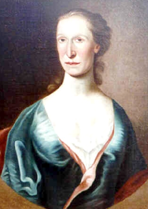

by
Stefan Bielinski
Jane Gregg Edgar was the wife of newcomer merchant David Edgar. According to subsequent sources, she was born about 1723 and was of Scottish ancestry.
Married at the Presbyterian church in Belfast in 1753, she accompanied her husband to America where he became a frontier trader who mostly was based in Albany. Their marriage produced several children and she later became an Albany mainstay herself.
David Edgar died in September 1776 leaving her trapped in wartime Albany. Without Edgar's incomes, her family's fortune dwindled leaving her "in misery and want." In August 1780, she applied to Governor George Clinton for permission to take her four children and servants to Canada where her husband had owned property. Clinton was moved to grant her petition. However, others who followed a harder line toward the so-call "Tory wives" intervened and her permission to leave was withdrawn.
In 1779, her house and holdings in the third ward were valued on the March and October assessment rolls. It also appearded that a number of newcomer traders were her boarders.
In 1788, she was among those whose personal holdings were assessed under the first ward. Two years later, she was still in Albany and living in her son's second ward home.
Jane Gregg Edgar died in September 1800 at the age of seventy-seven. "Jane, the wife of David Edgear" was buried in the Presbyterian cemetery plot. She had lived in Albany for more than forty years.
notes
Detail of a copy of a companion portrait (with her husband) done by Thomas
McIlworth during the 1760s. Now in a private collection.  Sources: The life of Jane Gregg Edgar is CAP
biography number 7916. This profile is derived
chiefly from family and community-based
resources.
Sources: The life of Jane Gregg Edgar is CAP
biography number 7916. This profile is derived
chiefly from family and community-based
resources.
first posted: 6/10/03; revised 7/6/10